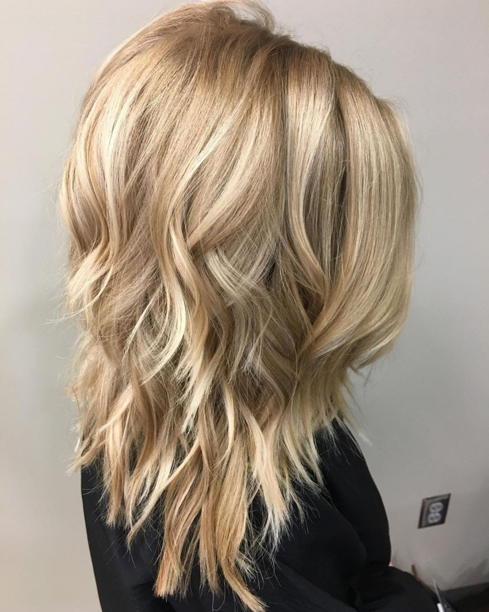
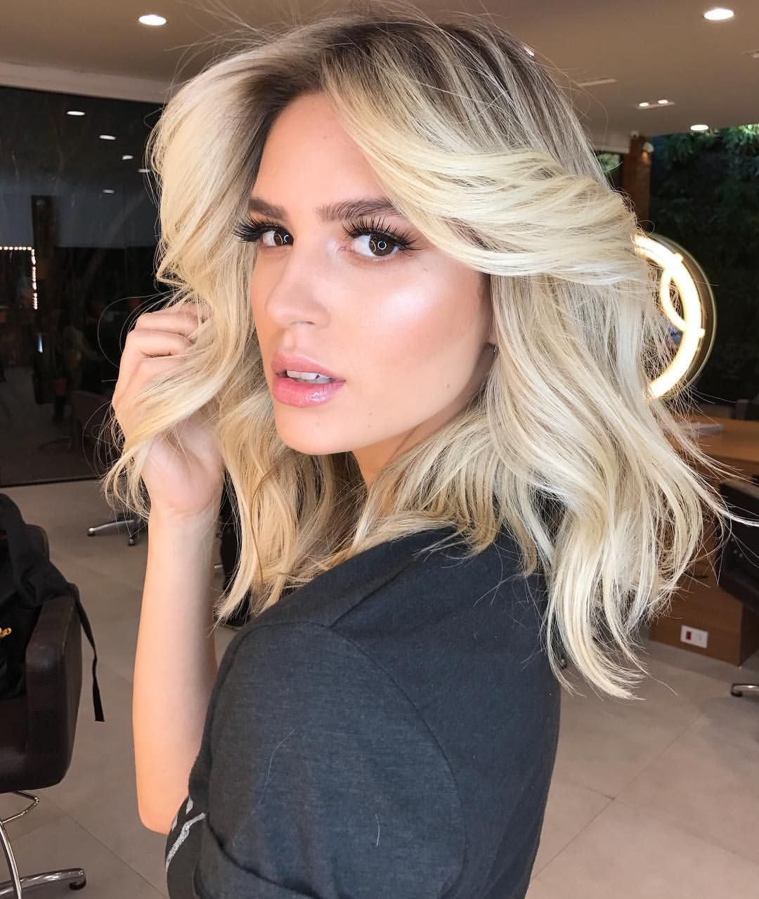

Каскад на средние волосы
В стрижке каскад верхние слои волос всегда чуть короче нижних, за счет этого достигается нужная форма и объем стрижки.
Правильная стрижка каскад подразумевает плавные переходы длины, которые тщательно завуалированы и не бросаются в глаза.
Каскад подходит для любого типа волос и структуры, он выигрышно смотрится и на прямых волос и на вьющихся.
Прямым тонким волосам каскад придаст немного объема, для обладательниц вьющихся волос, каскад значительно облегчит укладку,
а для кудрявых волос сделает акцент на природной красоте локонов и их объеме.
К тому же стрижка каскад представляет множество вариантов стрижки и укладки.
Многие девушки считают среднюю длину волос самой удачной и практичной,
волосы чуть длиннее плеч или по плечи оптимальный вариант для тех, кто не любит долго возится с волосами и тратить много времени на укладку,
но при этом иметь из чего сделать прическу)))
На пике популярности среди стрижек на средние волосы лидирует стрижка каскад